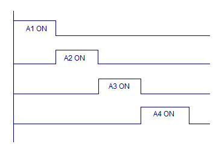

Introduction
Hardware Discussion (1/2): Stepper MotorFig: An Unipolar Stepper Motor
Stepper Motor Features :
Stepper motor is brushless DC motor, which can be rotated in small angles, these angles are called steps. Generally stepper motor use 200 steps to complete 360degree rotation, means its rotate 1.8 degree per step. Stepper motor used in manydevices which needs precise rotational movement like robots, antennas, hard drivesetc. We can rotate stepper motor to any particular angle by giving it proper in-structions. Stepper motor consumes high current during step rotation with load.20.To handle the extra power needed for stepper motor we will use high current drivingICs like ULN2003, L293D etc. How it works?
Stepper motor is a brush less motor which converts electrical pulses into
mechanical rotation. As the name indicates it rotates in steps according
to the inputpulses. A stepper motor usually have a number of field coils
(phases) and a too the rotor. The step size of the motor is determined by
the number of phases and the number of teeth on the rotor. Step size is the
angular displacement of the rotor inone step.
Fig: Unipolar Stepper Motor Ciol Windings
The stepper motor is rotated by switching individual phases ON for a given timeone by one. The sequence is given in the graph below.

Fig: Stepper Motor Timing Diagram
Circuit Diagram :
Fig: Stepper Motor with 8051
Circuit Discussion :The circuit diagram for interfacing stepper motor to 8051 is shown above. P1.0,P1.1, P1.2 and P1.3 pins are used for controlling the phases A1, A2, A3 and A4 ofthe stepper motor respectively. ULN2003 is used for driving the individual phasesof the stepper motor. ULN2003 is a darlington transistor array used for driving highcurrent loads such as relays and motors. ULN2003 has 8 individual channels eachwith 1A capacity. The channels can be paralleled to increase the current capacity.Each channels are fitted with individual freewheeling diodes. The ULN2003 is op-erated in current sinking mode. Each channel is activated by giving a logic LOWat the corresponding input. For example if we make pin 1 of ULN2003 LOW, phaseA1 of the stepper motor gets switched ON. Assembly Program : stepper_8051.asmCode Discussion:The program first clears P1.0 for activating phase 1 (A1) of the stepper motor. This condition is maintained for 65mS and then P1.0 is set for deactivating phase 1 of the motor. Then the same process is repeated for the port pins P1.1 to P1.3 and the entire cycle is repeated over and over to make the motor rotate in the clockwise direction. Timer 0 of the microcontroller is configured in Mode1 for producing the 65mS delay. 65mS is the width of each control pulse. |
Lesson Video |
| Prev topic: LED Matrix Interfacing with 8051 | Next topic: Analog Reading with 8051 |